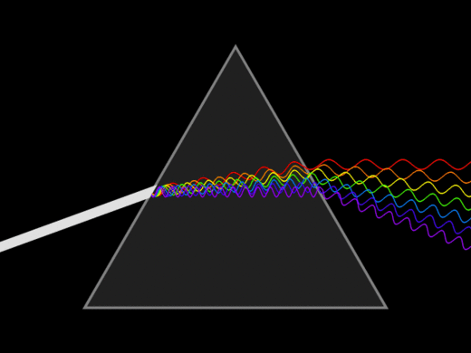
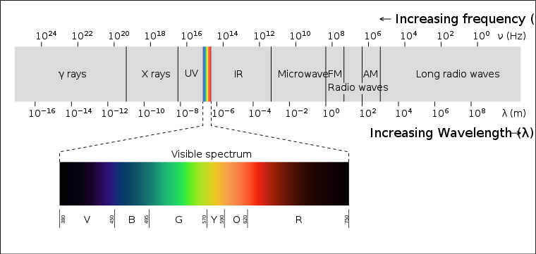
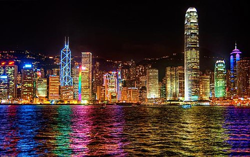
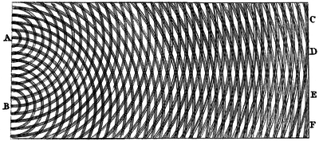
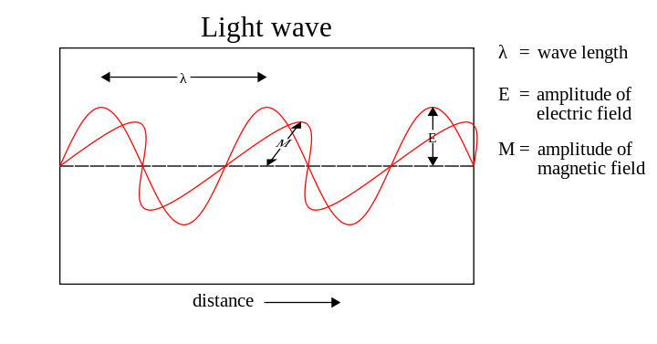

Light or visible light is electromagnetic radiation within the portion
of the electromagnetic spectrum that is perceived by the human eye.
Visible light is usually defined as having wavelengths in the range of
400–700 nanometres (nm), between the infrared (with longer wavelengths)
and the ultraviolet (with shorter wavelengths). This wavelength means a
frequency range of roughly 430–750 terahertz (THz).
The primary properties of visible light are
intensity, propagation-direction, frequency or wavelength spectrum and
polarization. Its speed in a vacuum, 299 792 458 metres a second (m/s),
is one of the fundamental constants of nature, as with all types of
electromagnetic radiation (EMR), light is found in experimental
conditions to always move at this speed in a vacuum.
In physics, the term 'light' sometimes refers to electromagnetic
radiation of any wavelength, whether visible or not. In this sense,
gamma rays, X-rays, microwaves and radio waves are also light. Like all
types of electromagnetic radiation, visible light propagates as waves.
However, the energy imparted by the waves is absorbed at single
locations the way particles are absorbed. The absorbed energy of the
electromagnetic waves is called a photon and represents the quanta of
light. When a wave of light is transformed and absorbed as a photon, the
energy of the wave instantly collapses to a single location and this
location is where the photon "arrives". This is what is called the wave
function collapse. This dual wave-like and particle-like nature of light
is known as the wave–particle duality. The study of light, known as
optics, is an important research area in modern physics.
The main source of light on Earth is the Sun. Historically, another
important source of light for humans has been fire, from ancient
campfires to modern kerosene lamps. With the development of electric
lights and power systems, electric lighting has effectively replaced
firelight.

A triangular prism dispersing a beam of white light. The longer
wavelengths (red) and the shorter wavelengths (blue) are separated.
Electromagnetic spectrum and visible light
Generally, EM radiation (the designation "radiation" excludes static
electric, magnetic and near fields), or EMR, is classified by wavelength
into radio waves, microwaves, infrared, the visible spectrum that we
perceive as light, ultraviolet, X-rays and gamma rays.
The behavior of EMR depends on its wavelength. Higher frequencies have
shorter wavelengths and lower frequencies have longer wavelengths. When
EMR interacts with single atoms and molecules, its behavior depends on
the amount of energy per quantum it carries.
EMR in the visible light region consists of quanta (called photons) that
are at the lower end of the energies that are capable of causing
electronic excitation within molecules, which leads to changes in the
bonding or chemistry of the molecule. At the lower end of the visible
light spectrum, EMR becomes invisible to humans (infrared) because its
photons no longer have enough individual energy to cause a lasting
molecular change (a change in conformation) in the visual molecule
retinal in the human retina, which change triggers the sensation of
vision.
Various sources define visible light as narrowly as 420–680 nm to as
broadly as 380–800 nm. Under ideal laboratory conditions, people can see
infrared up to at least 1,050 nm;children and young adults may perceive
ultraviolet wavelengths down to about 310–313 nm.

The electromagnetic spectrum, with the visible portion highlighted
Light sources
There are many sources of light. A body at a given temperature emits a
characteristic spectrum of black-body radiation. A simple thermal source
is sunlight, the radiation emitted by the chromosphere of the Sun at
around 6,000 kelvins (5,730 degrees Celsius; 10,340 degrees Fahrenheit)
peaks in the visible region of the electromagnetic spectrum when plotted
in wavelength units and roughly 44% of sunlight energy that reaches the
ground is visible. Another example is incandescent light bulbs, which
emit only around 10% of their energy as visible light and the remainder
as infrared. A common thermal light source in history is the glowing
solid particles in flames, but these also emit most of their radiation
in the infrared and only a fraction in the visible spectrum.
The peak of the black-body spectrum is in the deep infrared, at about 10
micrometre wavelength, for relatively cool objects like human beings. As
the temperature increases, the peak shifts to shorter wavelengths,
producing first a red glow, then a white one and finally a blue-white
colour as the peak moves out of the visible part of the spectrum and
into the ultraviolet. These colours can be seen when metal is heated to
"red hot" or "white hot". Blue-white thermal emission is not often seen,
except in stars (the commonly seen pure-blue colour in a gas flame or a
welder's torch is in fact due to molecular emission, notably by CH
radicals (emitting a wavelength band around 425 nm and is not seen in
stars or pure thermal radiation).
Atoms emit and absorb light at characteristic energies. This produces
"emission lines" in the spectrum of each atom. Emission can be
spontaneous, as in light-emitting diodes, gas discharge lamps (such as
neon lamps and neon signs, mercury-vapor lamps, etc.) and flames (light
from the hot gas itself—so, for example, sodium in a gas flame emits
characteristic yellow light). Emission can also be stimulated, as in a
laser or a microwave maser.
Certain other mechanisms can produce light:
Bioluminescence
Cherenkov radiation
Electroluminescence
Scintillation
Sonoluminescence
Triboluminescence
A cloud illuminated by sunlight

Hong Kong illuminated by colourful artificial lighting.
Units and measures
Light is measured with two main alternative sets of units: radiometry
consists of measurements of light power at all wavelengths, while
photometry measures light with wavelength weighted with respect to a
standardized model of human brightness perception. Photometry is useful,
for example, to quantify Illumination (lighting) intended for human use.
The SI units for both systems are summarized in the following tables.
Table 1. SI radiometry units
Quantity
Unit
Dimension
Notes
Name
Symbol
Name
Symbol
Symbol
Radiant Energy
Qe
joule
J
M⋅L2⋅T−2
Energy of electromagnetic radiation.
Radiant Energy Density
we
joule per cubic metre
J/m3
M⋅L-1⋅T−2
Radiant energy per unit volume.
Radiant Flux
Φe
watt
W = J/s
M⋅L2⋅T−3
Radiant energy emitted, reflected, transmitted or received, per
unit time. This is sometimes also called "radiant power".
Spectral Flux
Φe,ν
watt per hertz
W/Hz
M⋅L2⋅T−2
Radiant flux per unit frequency or wavelength.
Φe,λ
watt per meter
W/m
M⋅L⋅T−3
Radiant Intensity
Ie,Ω
watt per steradian
W/sr
M⋅L2⋅T−3
Radiant flux emitted, reflected, transmitted or received, per unit
solid angle. This is a directional quantity.
Spectral Intensity
Ie,Ω,ν
watt per steradian per hertz
W⋅sr−1⋅Hz−1
M⋅L2⋅T−2
Radiant intensity per unit frequency or wavelength.
Ie,Ω,λ
watt per steradian per metre
W⋅sr−1⋅Hz−1
M⋅L⋅T−3
Radiance
Le,Ω
watt per steradian per square metre
W⋅sr−1⋅m−2
M⋅T−3
Radiant flux emitted, reflected, transmitted or received by a
surface, per unit solid angle per unit projected area. This is a
directional quantity. This is sometimes also confusingly called
"intensity".
Spectral Radiance
Le,Ω,ν
watt per steradian per square metre per hertz
W⋅sr−1⋅m−2⋅Hz−1
M⋅T−2
Radiance of a surface per unit frequency or wavelength. This is a
directional quantity. This is sometimes also confusingly called
"spectral intensity".
Le,Ω,λ
watt per steradian per square metre, per metre
W⋅sr−1⋅m−3
M⋅L−1⋅T−3
Irradiance
Ee
watt per square metre
W/m2
M⋅T−3
Radiant flux received by a surface per unit area. This is
sometimes also confusingly called "intensity".
Table 2. SI photometry quantities
Quantity
Unit
Dimension
Notes
Name
Symbol
Name
Symbol
Symbol
Luminous Energy
Qv
lumen second
lm⋅s
TJ
The lumen second is sometimes called the talbot.
Luminous Flex, luminous Power
Φv
lumen
lm
J
Luminous energy per unit time
Luminous Intensity
Iv
candela
cd
J
Luminous flux per unit solid angle
Luminance
Lv
candela per square meter
cd/m2
L-2J
Luminous flux per unit solid angle per unit projected source area.
The candela per square metre is sometimes called the nit
Illuminance
Ev
lux
lx
L-2J
Luminous flux incident on a surface
Luminous exitance, luminous emittance
Mv
lumen per square meter
lx/m2
L-2J
Luminous flux emitted from a surface
Luminous exposure
Hv
lux second
lx⋅s
L-2TJ
Time-integrated illuminance
Luminous energy density
ωv
lumen second per cubic metre
lm⋅s/m3
L-3TJ
Luminous efficacy (of radiation)
K
lumen per watt
lm/W
M-1L-2T3J
Ratio of luminous flux to radiant flux
Luminous efficacy (of a source)
η
lumen per watt
lm/W
M-1L-2T3J
Ratio of luminous flux to power consumption
The photometry units are different from most systems of physical units
in that they take into account how the human eye responds to light. The
cone cells in the human eye are of three types which respond differently
across the visible spectrum and the cumulative response peaks at a
wavelength of around 555 nm. Therefore, two sources of light which
produce the same intensity (W/m2) of visible light do not necessarily
appear equally bright. The photometry units are designed to take this
into account and therefore are a better representation of how "bright" a
light appears to be than raw intensity. They relate to raw power by a
quantity called luminous efficacy and are used for purposes like
determining how to best achieve sufficient illumination for various
tasks in indoor and outdoor settings. The illumination measured by a
photocell sensor does not necessarily correspond to what is perceived by
the human eye and without filters which may be costly, photocells and
charge-coupled devices (CCD) tend to respond to some infrared,
ultraviolet or both.
Historical theories about light, in chronological order
Classical Greece and Hellenism
In the fifth century BC, Empedocles postulated that everything was
composed of four elements; fire, air, earth and water. He believed
that Aphrodite made the human eye out of the four elements and that
she lit the fire in the eye which shone out from the eye making sight
possible. If this were true, then one could see during the night just
as well as during the day, so Empedocles postulated an interaction
between rays from the eyes and rays from a source such as the sun.
In about 300 BC, Euclid wrote Optica, in which he studied the
properties of light. Euclid postulated that light travelled in
straight lines and he described the laws of reflection and studied
them mathematically. He questioned that sight is the result of a beam
from the eye, for he asks how one sees the stars immediately, if one
closes one's eyes, then opens them at night. If the beam from the eye
travels infinitely fast this is not a problem.
In 55 BC, Lucretius, a Roman who carried on the ideas of earlier Greek
atomists, wrote that "The light & heat of the sun; these are composed
of minute atoms which, when they are shoved off, lose no time in
shooting right across the interspace of air in the direction imparted
by the shove." (from On the nature of the Universe). Despite being
similar to later particle theories, Lucretius's views were not
generally accepted. Ptolemy (c. 2nd century) wrote about the
refraction of light in his book Optics.
Classical India
In ancient India, the Hindu schools of Samkhya and Vaisheshika, from
around the early centuries AD developed theories on light. According
to the Samkhya school, light is one of the five fundamental "subtle"
elements (tanmatra) out of which emerge the gross elements. The
atomicity of these elements is not specifically mentioned and it
appears that they were actually taken to be continuous. On the other
hand, the Vaisheshika school gives an atomic theory of the physical
world on the non-atomic ground of ether, space and time. (See Indian
atomism.) The basic atoms are those of earth (prthivi), water (pani),
fire (agni) and air (vayu) Light rays are taken to be a stream of high
velocity of tejas (fire) atoms. The particles of light can exhibit
different characteristics depending on the speed and the arrangements
of the tejas atoms. The Vishnu Purana refers to sunlight as "the seven
rays of the sun".
The Indian Buddhists, such as Dignāga in the 5th century and
Dharmakirti in the 7th century, developed a type of atomism that is a
philosophy about reality being composed of atomic entities that are
momentary flashes of light or energy. They viewed light as being an
atomic entity equivalent to energy.
Particle theory
Pierre Gassendi (1592–1655), an atomist, proposed a particle theory of
light which was published posthumously in the 1660s. Isaac Newton
studied Gassendi's work at an early age and preferred his view to
Descartes' theory of the plenum. He stated in his Hypothesis of Light
of 1675 that light was composed of corpuscles (particles of matter)
which were emitted in all directions from a source. One of Newton's
arguments against the wave nature of light was that waves were known
to bend around obstacles, while light travelled only in straight
lines. He did, however, explain the phenomenon of the diffraction of
light (which had been observed by Francesco Grimaldi) by allowing that
a light particle could create a localised wave in the aether
Newton's theory could be used to predict the reflection of light, but
could only explain refraction by incorrectly assuming that light
accelerated upon entering a denser medium because the gravitational
pull was greater. Newton published the final version of his theory in
his Opticks of 1704. His reputation helped the particle theory of
light to hold sway during the 18th century. The particle theory of
light led Laplace to argue that a body could be so massive that light
could not escape from it. In other words, it would become what is now
called a black hole. Laplace withdrew his suggestion later, after a
wave theory of light became firmly established as the model for light
(as has been explained, neither a particle or wave theory is fully
correct). A translation of Newton's essay on light appears in The
large scale structure of space-time, by Stephen Hawking and George F.
R. Ellis.
Pierre Gassendi
Wave theory
To explain the origin of colours, Robert Hooke (1635–1703) developed a
"pulse theory" and compared the spreading of light to that of waves in
water in his 1665 work Micrographia ("Observation IX"). In 1672 Hooke
suggested that light's vibrations could be perpendicular to the
direction of propagation. Christiaan Huygens (1629–1695) worked out a
mathematical wave theory of light in 1678 and published it in his
Treatise on light in 1690. He proposed that light was emitted in all
directions as a series of waves in a medium called the luminiferous
aether. As waves are not affected by gravity, it was assumed that they
slowed down upon entering a denser medium.
The wave theory predicted that light waves could interfere with each
other like sound waves (as noted around 1800 by Thomas Young). Young
showed by means of a diffraction experiment that light behaved as
waves. He also proposed that different colours were caused by
different wavelengths of light and explained colour vision in terms of
three-coloured receptors in the eye. Another supporter of the wave
theory was Leonhard Euler. He argued in Nova theoria lucis et colorum
(1746) that diffraction could more easily be explained by a wave
theory. In 1816 André-Marie Ampère gave Augustin-Jean Fresnel an idea
that the polarization of light can be explained by the wave theory if
light were a transverse wave.
Later, Fresnel independently worked out his own wave theory of light
and presented it to the Académie des Sciences in 1817. Siméon Denis
Poisson added to Fresnel's mathematical work to produce a convincing
argument in favor of the wave theory, helping to overturn Newton's
corpuscular theory.By the year 1821, Fresnel was able to show via
mathematical methods that polarization could be explained by the wave
theory of light if and only if light was entirely transverse, with no
longitudinal vibration whatsoever.
Newton's corpuscular theory implied that light would travel faster in
a denser medium, while the wave theory of Huygens and others implied
the opposite. At that time, the speed of light could not be measured
accurately enough to decide which theory was correct. The first to
make a sufficiently accurate measurement was Léon Foucault, in 1850.
His result supported the wave theory and the classical particle theory
was finally abandoned, only to partly re-emerge in the 20th century.
Christiaan Huygens
Electromagnetic theory
In 1845, Michael Faraday discovered that the plane of polarization of
linearly polarized light is rotated when the light rays travel along
the magnetic field direction in the presence of a transparent
dielectric, an effect now known as Faraday rotation. This was the
first evidence that light was related to electromagnetism. In 1846 he
speculated that light might be some form of disturbance propagating
along magnetic field lines. Faraday proposed in 1847 that light was a
high-frequency electromagnetic vibration, which could propagate even
in the absence of a medium such as the ether.
Faraday's work inspired James Clerk Maxwell to study electromagnetic
radiation and light. Maxwell discovered that self-propagating
electromagnetic waves would travel through space at a constant speed,
which happened to be equal to the previously measured speed of light.
From this, Maxwell concluded that light was a form of electromagnetic
radiation: he first stated this result in 1862 in On Physical Lines of
Force. In 1873, he published A Treatise on Electricity and Magnetism,
which contained a full mathematical description of the behavior of
electric and magnetic fields, still known as Maxwell's equations. Soon
after, Heinrich Hertz confirmed Maxwell's theory experimentally by
generating and detecting radio waves in the laboratory and
demonstrating that these waves behaved exactly like visible light,
exhibiting properties such as reflection, refraction, diffraction and
interference. Maxwell's theory and Hertz's experiments led directly to
the development of modern radio, radar, television, electromagnetic
imaging and wireless communications.
In the quantum theory, photons are seen as wave packets of the waves
described in the classical theory of Maxwell. The quantum theory was
needed to explain effects even with visual light that Maxwell's
classical theory could not (such as spectral lines).

Thomas Young's sketch of a double-slit experiment showing
diffraction. Young's experiments supported the theory that light
consists of waves.

A 3–dimensional rendering of linearly polarized light wave
frozen in time and showing the two oscillating components of
light; an electric field and a magnetic field perpendicular to
each other and to the direction of motion (a transverse wave).
Quantum theory
In 1900 Max Planck, attempting to explain black-body radiation,
suggested that although light was a wave, these waves could gain or
lose energy only in finite amounts related to their frequency. Planck
called these "lumps" of light energy "quanta" (from a Latin word for
"how much"). In 1905, Albert Einstein used the idea of light quanta to
explain the photoelectric effect and suggested that these light quanta
had a "real" existence. In 1923 Arthur Holly Compton showed that the
wavelength shift seen when low intensity X-rays scattered from
electrons (so called Compton scattering) could be explained by a
particle-theory of X-rays, but not a wave theory. In 1926 Gilbert N.
Lewis named these light quanta particles photons.
Eventually the modern theory of quantum mechanics came to picture
light as (in some sense) both a particle and a wave and (in another
sense), as a phenomenon which is neither a particle nor a wave (which
actually are macroscopic phenomena, such as baseballs or ocean waves).
Instead, modern physics sees light as something that can be described
sometimes with mathematics appropriate to one type of macroscopic
metaphor (particles) and sometimes another macroscopic metaphor (water
waves), but is actually something that cannot be fully imagined. As in
the case for radio waves and the X-rays involved in Compton
scattering, physicists have noted that electromagnetic radiation tends
to behave more like a classical wave at lower frequencies, but more
like a classical particle at higher frequencies, but never completely
loses all qualities of one or the other. Visible light, which occupies
a middle ground in frequency, can easily be shown in experiments to be
describable using either a wave or particle model, or sometimes both.
In February 2018, scientists reported, for the first time, the
discovery of a new form of light, which may involve polaritons, that
could be useful in the development of quantum computers.
Use for light on Earth
Sunlight provides the energy that green plants use to create sugars
mostly in the form of starches, which release energy into the living
things that digest them. This process of photosynthesis provides
virtually all the energy used by living things. Some species of animals
generate their own light, a process called bioluminescence. For example,
fireflies use light to locate mates and vampire squid use it to hide
themselves from prey.